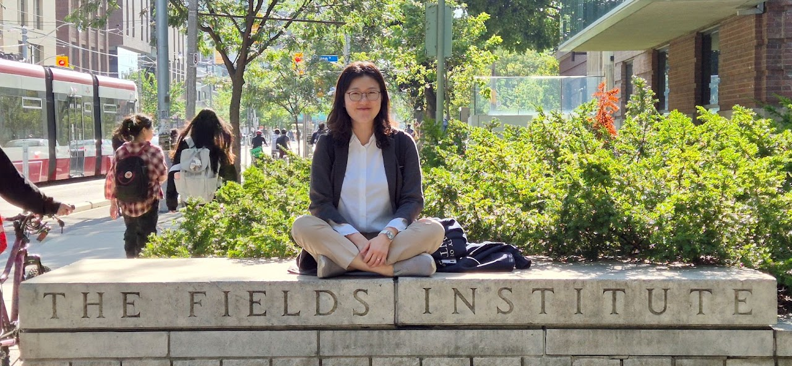

Featured publication
Torus orbit closures in the flag variety
With Mikiya Masuda and Seonjeong Park. In Handbook of Combinatorial Algebraic Geometry, 431–511 (2026).

Department of Mathematics · Chungbuk National University
I am an associate professor whose research is in equivariant algebraic topology, with connections to combinatorics, equivariant algebraic and symplectic geometry, and geometric representation theory. The fundamental objects of study in topology are manifolds—topological spaces that locally resemble Euclidean space near each point. Equivariant algebraic topology studies symmetries of spaces through algebraic structures. My main interest is in how this area interacts with neighboring parts of mathematics.
Featured publication
With Mikiya Masuda and Seonjeong Park. In Handbook of Combinatorial Algebraic Geometry, 431–511 (2026).
Ongoing seminar
Organized with Suyoung Choi and Jongbaek Song. March 2026–present.
NRF-RS-2026-25490065
Korean Women in Mathematical Sciences
TJ Park Foundation
Korean Mathematical Society
NRF-RS-2023-00239947
NRF-RS-2022-00165641
Department of Mathematics, Chungbuk National University · Cheongju, Korea
Department of Mathematics, Chungbuk National University · Cheongju, Korea
IBS Center for Geometry and Physics · Pohang, Korea
Department of Mathematical Sciences, KAIST · Daejeon, Korea
Advisor: Dong Youp Suh · Dissertation: Topology and Geometry of Flag Bott–Samelson Varieties and Bott Towers
Advisor: Dong Youp Suh · Dissertation: Schubert Calculus in Bott Manifolds
Last updated: September 17, 2026